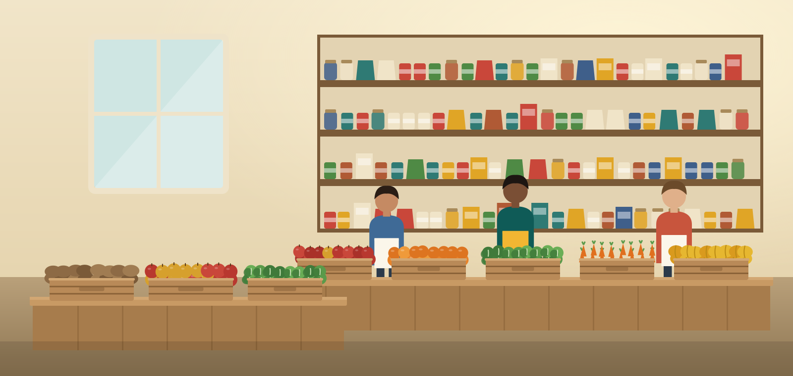
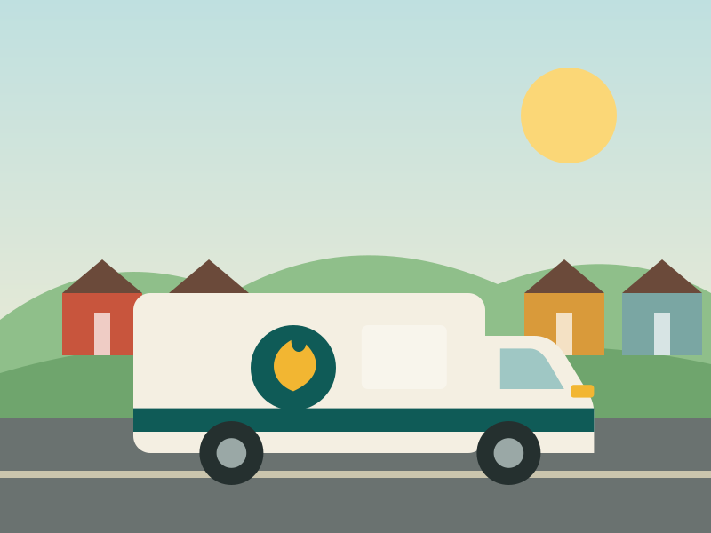
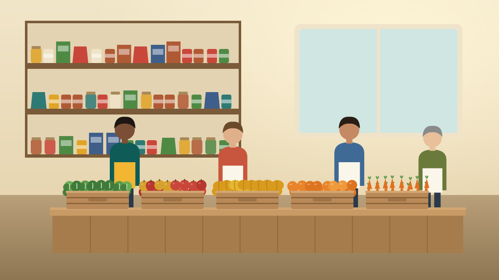
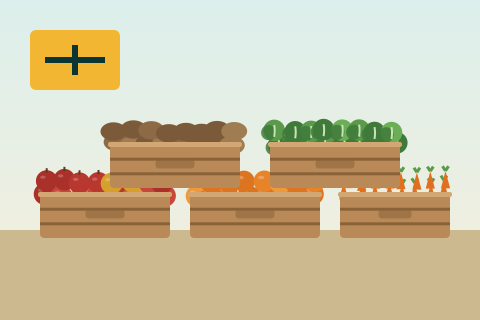
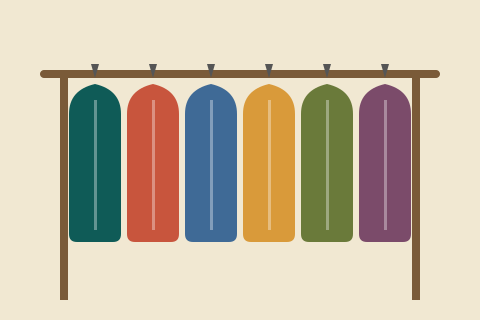
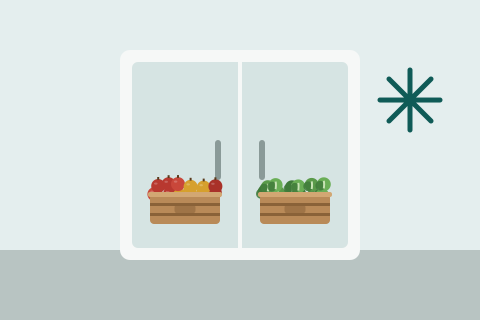
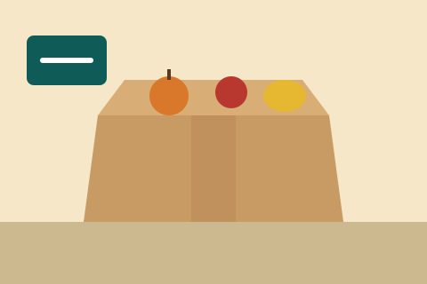

Our Food Pantry
Free groceries and fresh produce every Tuesday, Thursday and Saturday.
Learn More
Marguerite Oyelaran, founder
Cinderwell Community Pantry provides free groceries and fresh produce to our neighbors, three days a week.
Donate Today
Free groceries and fresh produce every Tuesday, Thursday and Saturday.
Learn More212,400
pounds of food distributed in 2025
Weighed at our loading dock and sorting tables, January through December 2025.

Groceries brought to neighbors who cannot make it to the pantry.
Learn MoreAnyone in Fennick Hollow and the surrounding townships who needs groceries is welcome here.
Families with kids, seniors on fixed incomes, workers between paychecks, and neighbors who have never asked for help before all come through our doors. There is no income paperwork to bring on your first visit.
1,150households visited us at least once in 2025, from our sign-in sheets
Registering takes about ten minutes at your first visit. Bring a photo ID and something with your current address, such as a utility bill or a piece of mail.
What to ExpectCinderwell began in 1998 in a church hall kitchen, when Marguerite Oyelaran and a handful of neighbors set up a folding table and handed out groceries on Saturday mornings.
The line grew every week. In 2011 we moved into our own building on Alder Street, and today more than eighty volunteers keep the doors open.
We run a choose-your-own grocery pantry, a Saturday fresh produce market stocked by local farms, a Tuesday evening supper, and a home delivery route for neighbors who cannot travel.

Before the doors open at nine, the farm delivery is unloaded, produce is sorted into crates and the shelves are restocked. It takes all of us, and there is always room for one more pair of hands.

Oct 22, 2026
Schools, churches and neighborhood groups are collecting canned goods and pantry staples all week. Details on joining or hosting a drive are on our volunteer page.
Host or join a drive
Oct 15, 2026
Bring a coat you have outgrown or take one you need, no questions asked. We will be set up in the side room during Saturday pantry hours.
See pantry hours
Oct 8, 2026
Thanks to local business sponsors, we can now keep more fresh produce, eggs and dairy on the shelves from one distribution day to the next.
About our programsSep 30, 2026
New to volunteering with us? Short orientations run before each Saturday sort. Teens 14 and up are welcome with a parent or guardian.
How to volunteer
Sep 24, 2026
Households who would like a holiday box can sign up at any pantry visit or by phone. Boxes are picked up the week of Thanksgiving.
What to expectPantry news, volunteer openings and event dates, about twice a month.
One-time, monthly, or stock gifts accepted. Every gift, in any amount, goes toward food and getting it to our neighbors.
Donate TodayCinderwell Community Pantry is a registered nonprofit.
Gifts are pooled, so this is a proportional estimate of your share, not a count.
Your share, an estimate
Gifts of any size go toward food and getting it to our neighbors. There is no deadline.
Cinderwell Community Pantry is a registered nonprofit.